Paula Operations Manual
Cairo 3A · Module 4 — the dual-mode optimization engine that decides how many birds of which weight to slaughter to maximise profit. The cockpit is where you configure and launch optimization runs, read each run's harvest and cutting plan in depth, check the market forecast the engine plans against, and score how the forecast models performed — all behind a single sign-in.
- 6 screens + sign-in
- Desktop ≥ 1280 px
- EGP · kg · tonnes
Tip: hover a numbered marker on a screenshot to highlight the matching callout. Click any screenshot to zoom — long pages scroll inside the zoom view.
What's new in this release
The app has grown substantially since June. If you knew the old three-screen cockpit, here is what changed.
- The Dashboard split in two. The old home page tried to be both a launcher and a results viewer. Now Planning (the home page) only configures and launches runs, and every run gets its own Run Results page. Pressing Run Optimization takes you straight to the new run's page, where you watch it execute and the results land in place.
- New Run History screen. A full, searchable archive of every run — filter by date, mode, status, or a word from the run's note, then open or permanently delete any run.
- Run results are now seven tabs deep. Supply, Demand (demand runs), Production, Allocation, What if, Matrix, and Per-day — with a shared Mix / Fresh / Frozen scope filter, Excel exports (full plan + a step-by-step audit trail), and a per-run constraints record in the header.
- Demand mode moved into the Planning form. The separate Demand Override page is retired. On a Demand run you attach an Excel demand workbook — or use the model's own forecast, previewed and confirmed before the run — right in the run form.
- Per-run constraints and category picker. Override constraints or restrict which product categories a run may produce — for that run only, never written back to configuration.
- New Evaluation screen. Scores the forecast models against what actually happened: price-factor accuracy, demand-forecast accuracy, and the bird-weight curve vs the plant's own recorded weights.
- Market Intelligence rebuilt, fresh-only. Two tabs — Price Factor and Demand Forecast — covering fresh products only. The old Weight Distribution view moved: its validation now lives on Evaluation, and each run's weight curve on the run's Supply tab.
- Runs outlive the page. A floating progress pill follows you on every screen while a run executes, and a notification bell in the sidebar records finished runs — with desktop notifications if you allow them.
- No more API key entry. The backend key is baked into the deployment. Sign in and every screen just works; Settings is now purely a read-only reference of the engine's configuration.
- Money discipline. Run results deliberately show no EGP figures — economics appear as price factors, cost factors, and profit / contribution indices, and even the fixed-cost alert states a coverage percentage only.
Sign In
Paula is access-controlled. Enter the shared operator credentials to open the cockpit. The session lives in the browser tab — a refresh keeps you signed in, a new tab asks again.
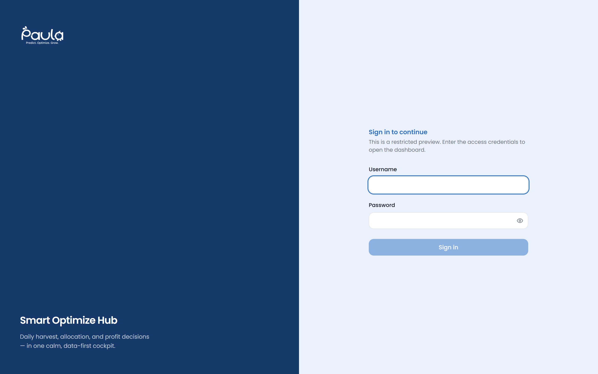
- Brand panel The Paula "Smart Optimize Hub" mark — confirms you're on the right cockpit.
- Username The shared operator credential supplied by the Datalentech team — there are no per-user accounts.
- Password Use the eye icon to reveal what you typed. Wrong credentials show an inline error that clears as soon as you edit either field.
- Sign in Stays disabled until both fields are filled. Opens the Planning page; Log out sits at the bottom of the app sidebar and acts immediately.
No API key needed — the backend key is built into the deployment. Once signed in, every screen loads live data.
Planning
The home page. Configure the next optimization run — mode, period, prices, demand data, per-run constraints and categories — then press Run Optimization. Results never render here: you're taken straight to the new run's own page. The newest 7 runs sit below so the landing page is never empty.
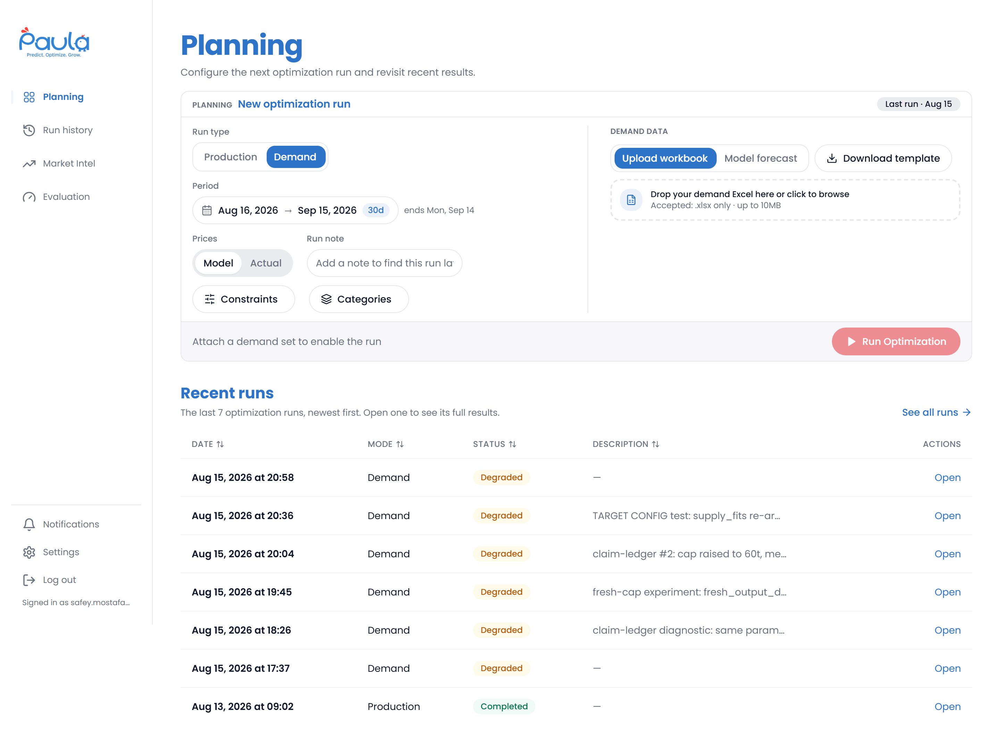
- Run type Production maximises profit from available supply; Demand plans against attached demand orders. Your last-used mode is remembered.
- Period Opens a booking-style two-month calendar. Pick start and end in two clicks; the past is fully open (historical runs are first-class) and the end date can reach at most one month ahead.
- Prices & farm stock Model (forecast) or Actual market prices. With Actual, a Farm stock toggle appears — With sales / Without sales — choosing which historical stock the supply figures count.
- Demand data (Demand mode) Attach an .xlsx demand workbook (template download available) or switch to the Model forecast — which must be previewed and ticked "I've reviewed the forecast preview" before the run can start.
- Run note, Constraints & Categories An optional note to find the run later, plus two per-run panels: constraint overrides and a category picker restricting what the run may produce. Both apply to this run only and are discarded afterwards.
- Readiness line & Run Optimization The footer always states exactly what will run — or the one thing still blocking it. The red button fires the run and takes you to its results page.
- Recent runs The newest 7 runs with date, mode, status badge and note — click any row to open it. "See all runs" opens the full Run History. Deliberately no profit column.
The form is a draft that survives navigation — mode, period, prices, attached demand set, note, constraint and category changes are all still there when you come back. While a run is in flight, a banner with live progress appears here, and a floating pill follows you on every screen.
Run History
The full archive of every optimization run, newest first. Filter by created date, mode, status, or a word from the run's note; open any run's results, or permanently delete a run you no longer need.
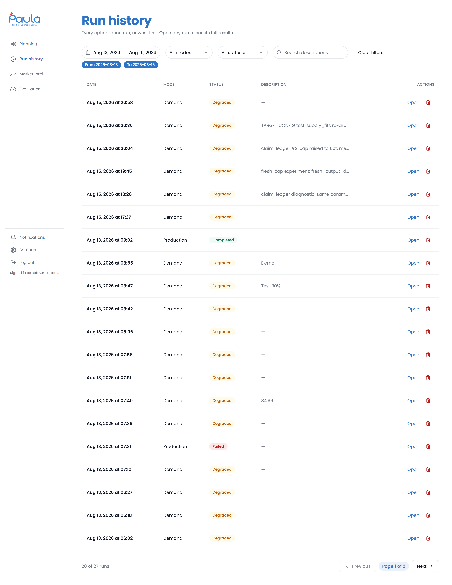
- Created-date filter Defaults to the last 3 days, so the page opens on recent runs. Older runs aren't missing — widen the window, or Clear filters for all of history.
- Mode & status filters Production / Demand, and Completed / Degraded / Failed / Running / Queued. "Completed" includes degraded runs; pick "Degraded" to see only those.
- Search Matches any part of the run's description note, ignoring case. Runs with no note never match a search.
- Runs table Date, mode, a coloured status badge, and the note. Click anywhere on a row to open that run's results page.
- Open & delete The trash icon opens a confirmation — deleting is hard and permanent, saved results included. An in-progress run is stopped first ("Stop and delete").
- Pager 20 runs per page, with "{shown} of {total} runs" counting the entire filtered set. Rows stay visible while the next page loads.
Run Results
Every run has its own results page — reached by starting a run, clicking a history row, or a shared link. While the run executes you watch it here; when it lands, the results render across seven tabs. The tab, scope and selections live in the page address, so a shared link reproduces exactly what you see. Money never appears on this page — economics are factors and indices.
Header & Supply tab — what the run harvested
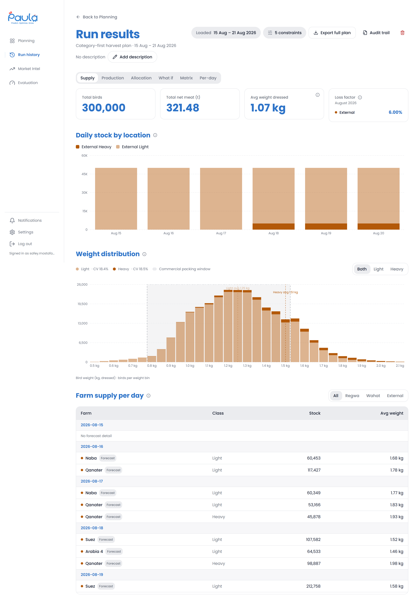
- Run identity "Run results" with the period range and the run's note (pencil icon to edit). Chips state the loaded period, a "Historical" badge on past-period runs, the demand source on demand runs, and the constraints record — hover it to see each constraint honored, exceeded, or removed.
- Exports & delete "Export full plan" downloads the plan workbook (Excel). "Audit trail" downloads every step and selection the optimizer made — including candidates it rejected. The red trash deletes the run permanently.
- Tab strip Supply · Demand (demand runs only) · Production · Allocation · What if · Matrix · Per-day. A freshly opened run lands on Supply.
- Supply KPIs Total birds, total net meat (t), average dressed weight per bird (live × 0.73), and each farm's monthly loss factor.
- Daily stock by location Stacked bars of birds per day, one segment per farm source and flock class — dark shade heavy, pale shade light. Hover for the exact split.
- Weight distribution Birds per dressed-weight bin, stacked by farm source, with a light/heavy class toggle, CV per class, and the packing window marked.
- Farm supply per day Per-day, per-farm stock and average weight. A "Forecast" tag marks projected rows; untagged rows record what actually happened.
Production tab — what the run produced, per category
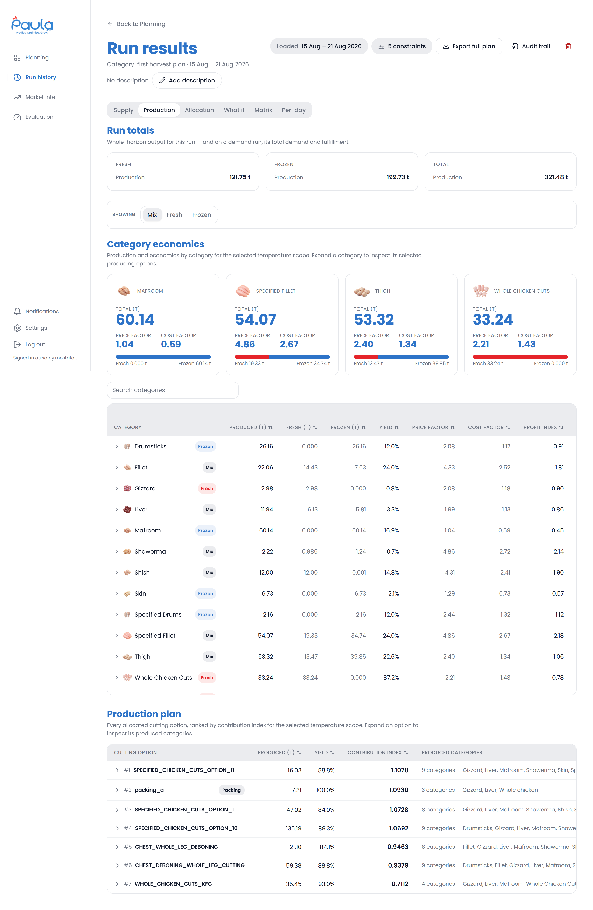
- Run totals Fresh / Frozen / Total cards — production in tonnes and, on demand runs, the demand served and a large "Production achievement" percentage (the demand ledger's served-vs-target ratio).
- Scope bar Mix | Fresh | Frozen narrows Production, Allocation, What if and Matrix at once; a blue ribbon reminds you the figures below are not run totals. "Show all" resets.
- Top categories Up to four hero cards — tonnage, price / cost factor pair, and a fresh/frozen mini split.
- Category economics Every category's produced tonnes, fresh/frozen split, yield, price factor, cost factor, profit index and contribution index — sortable, searchable. Expand a category to see the cutting options that produced it. On demand runs, demand, coverage and outstanding columns join in, and a "Not produced" badge marks ordered-but-unmade categories.
- Production plan Every allocated cutting option ranked by contribution index; expand one to see the categories it produced. Packing producers carry a "Packing" badge with per-weight-band sub-rows.
Allocation tab — output by dressed-weight band
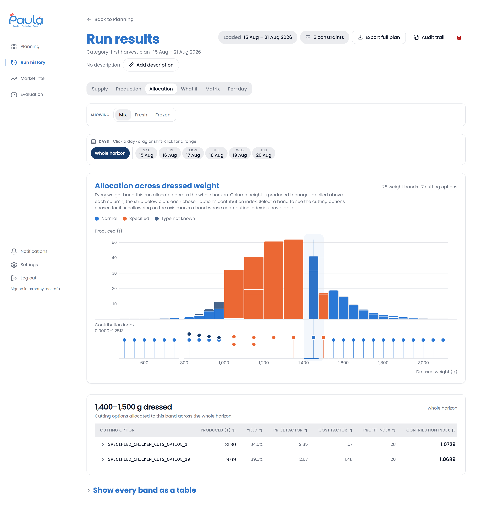
- Day-window filter A strip of day pills — click one day, or drag / shift-click a range — to recompute the whole tab for just those days. "Whole horizon" resets.
- Allocation spine A mass histogram over dressed-weight bands (column height = produced tonnes) above a strip plotting each chosen option's contribution index, on one shared weight axis. Every band is clickable.
- Band detail Select a band to see the cutting options allocated to it — produced tonnes, yield, factors and indices — each expandable into its category breakdown. A closed-by-default disclosure shows every band as one accessible table.
What if tab — why this plan, and what the alternatives were worth
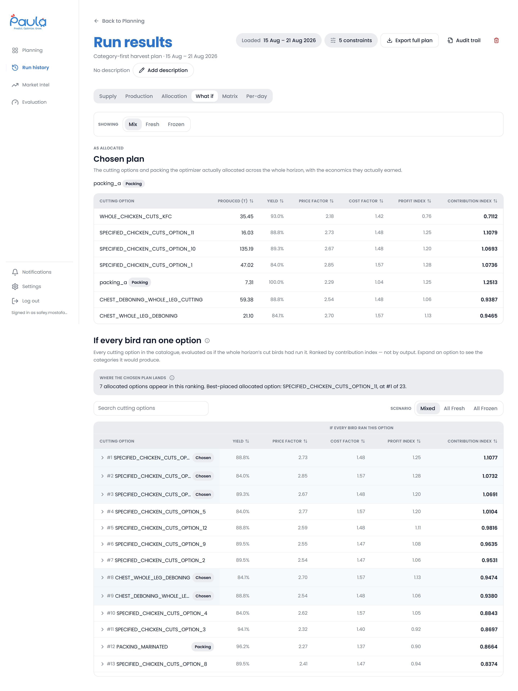
- Chosen plan The cutting options and packing the optimizer actually allocated, with the economics they actually earned — the only real tonnes on this tab.
- If every bird ran one option Every catalogue option evaluated as if the whole horizon had run it, ranked by contribution index. A verdict box names where the chosen option ranks and which option ranked first.
- Scenario toggle Mixed | All Fresh | All Frozen — three whole-bird scenarios, not a product filter. Expand any row to see every category that option would produce. "Not run-eligible" rows are shown for comparison, never as missed opportunities.
Matrix tab — day × category heatmap
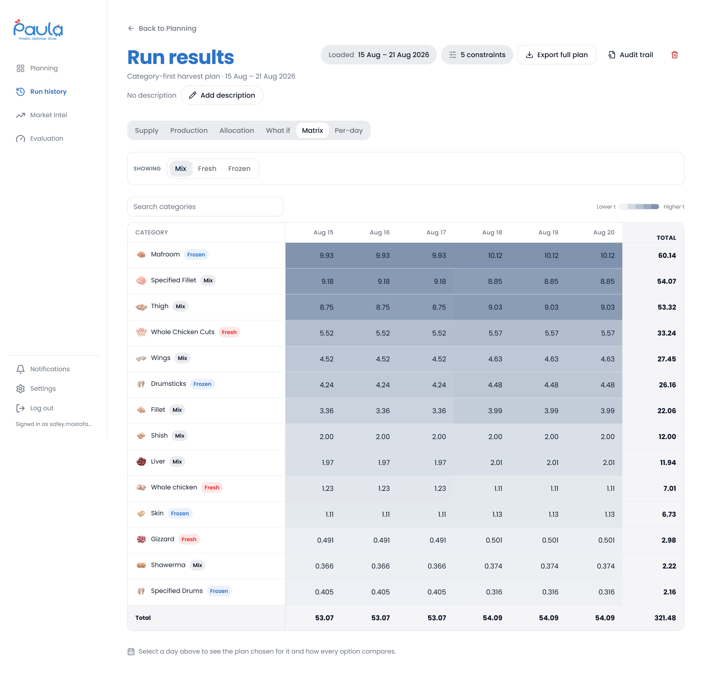
- Categories × days One row per category, one column per day; each cell prints its tonnes over a heat fill. An em-dash means nothing recorded — never zero.
- Cell hover Shows the tonnes, the fresh / frozen split, and the category's price and cost factors for that day.
- Totals A trailing Total column per category and a bottom Total row per day meet at the horizon's grand total.
- Day panel Click any day's header, cell, or total to open that day's plan below — the chosen options with cap attribution, plus the same what-if ranking at day grain, evaluated at the day's own representative weight.
Per-day tab — the day ledger
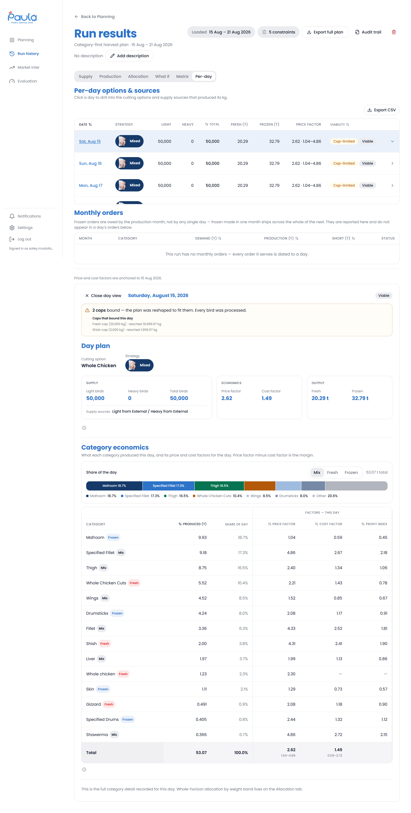
- Per-day options & sources One row per day — strategy, Light / Heavy / Total birds, Fresh and Frozen tonnes, the day's price-factor summary, and a viability badge ("Cap-limited" marks cap-bound days; breached days tint red). Export CSV at the top. This tab always shows whole-run figures.
- Monthly orders Frozen orders are owed by the production month, not by any single day — frozen made in one month ships across the next. Met / Breach status and an independent Unproduced / Part-produced badge per category pool.
- Day drill-down Click a day to open its detail: the day plan (cutting option, strategy, supply sources, recommended supply, price and cost factors, fresh/frozen output), the day's orders ledger, and its per-category economics with a share-of-day composition bar.
Demand tab — what a demand run served (demand runs only)
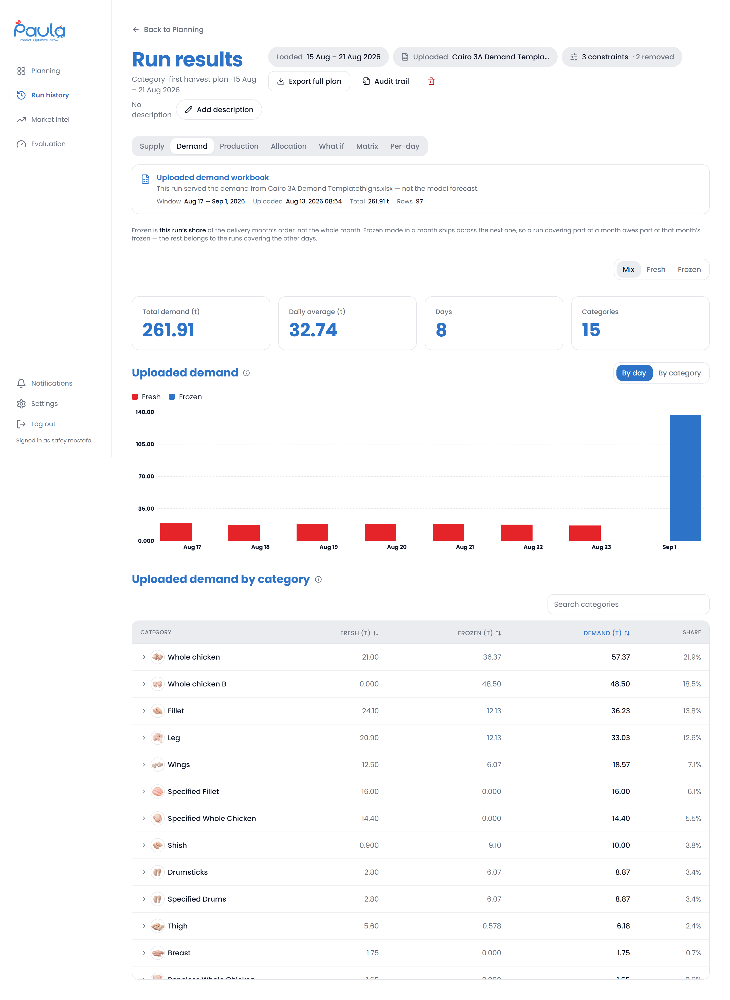
- Source banner Where this run's demand came from — an uploaded workbook, the model forecast, or the API — with its window, timestamps, total tonnes and row count. Always the run's own saved demand set, never the live preview.
- Demand KPIs Total demand (t), daily average, days, and categories — with a local Mix / Fresh / Frozen toggle when the set states temperatures.
- Demand chart Fresh (red) and Frozen (blue) side by side, switchable between a by-day and a by-category axis. Frozen is restated as this run's pro-rated share of the delivery month's order — the on-screen note explains it.
- Category table Each category's fresh / frozen / total demand and share of the window — expand a row for its per-day demand curve.
While a run executes, this page shows a live progress caption with a day counter ("Running optimization — day 3 of 14…") over a skeleton, and the results replace it the moment the run lands. A failed or cancelled run says so explicitly — a crash is never confused with old data.
Market Intelligence
The forecast model's forward view of the market — for fresh products only. Two tabs: predicted price factors (or EGP/kg selling prices) per SKU, and the model's weekly demand forecast in tonnes per category. Strictly forecast-only: realized actuals and accuracy live on the Evaluation screen.
Price Factor tab
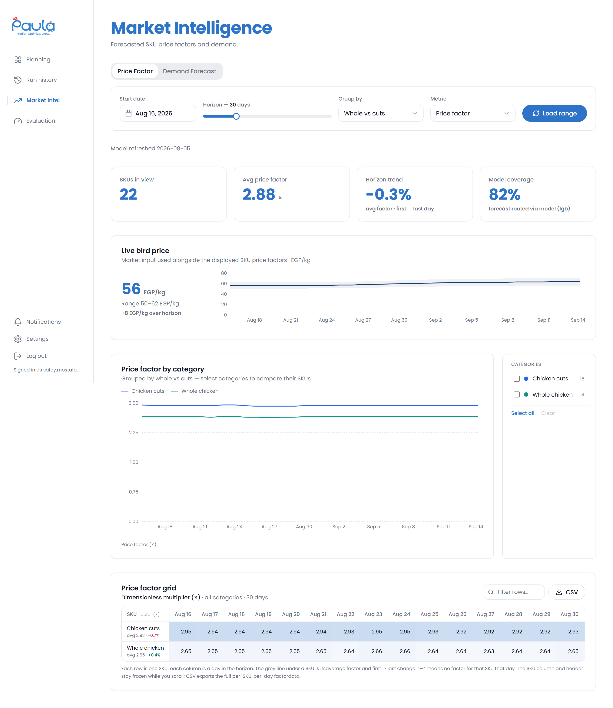
- Range controls Start date, horizon (1–120 days), group-by (Whole vs cuts / Product) and metric (Price factor / Price per kg). Nothing reloads until you press "Load range" — the loaded range is written into the address, so links are shareable.
- KPI row SKUs in view · Avg price factor (×) · Horizon trend (first → last day) · Model coverage — the share of forecasts routed via the LightGBM model rather than a lookup fallback.
- Live bird price The farm-gate input every price factor multiplies. Headline midpoint, low–high range, horizon delta, and a band chart of the uncertainty across the range.
- Price factor by category One line per category group; check groups in the rail to drill into individual SKUs ("← All categories" goes back). A factor of 2.40 = predicted to sell at 2.4× the live-bird price.
- Categories rail The drill-down control — checking groups switches the chart, KPIs and grid to the SKUs inside them.
- Price grid + CSV The full series × date matrix, heat-shaded, with frozen header and first column. CSV always exports per-SKU, per-day values, whatever the on-screen grouping. "—" means no prediction, not zero.
Demand Forecast tab
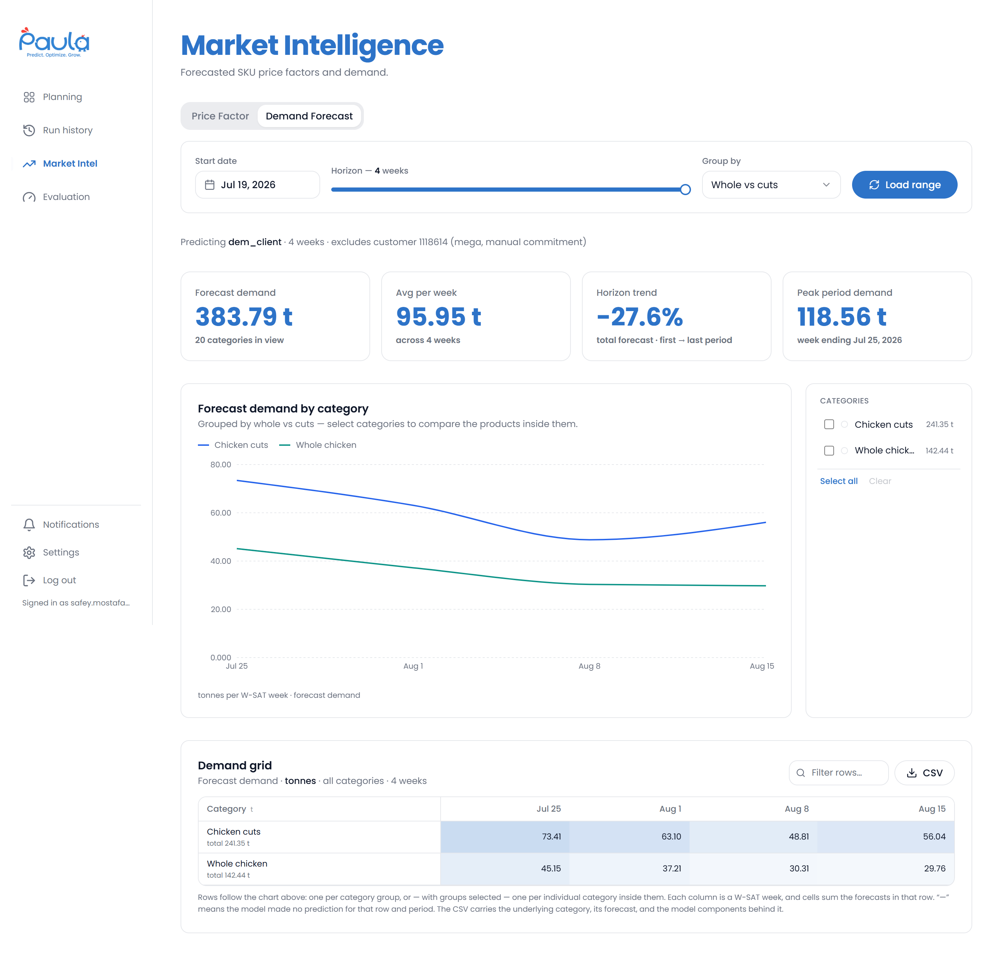
- Weekly controls Start date and a horizon of 1–4 weeks — the cap is hard, the model only predicts 4 weeks out. Weeks end on Saturday. This tab keeps its own range, separate from the price tab's.
- Forecast KPIs Total forecast demand (t) · average per week · horizon trend · peak week. All tonnes; forecast-only — no actuals anywhere on this tab.
- Forecast demand by category Tonnes per week-end date, per category group — drill into individual categories via the rail, which also shows each group's window total.
- Demand grid + CSV Category × week matrix with a "top 10" badge on the model's top categories. Careful: the CSV exports raw kg (×1000 vs the screen) and carries the model components behind each blended number.
Evaluation
How the forecast models performed against realized actuals. Three tabs, each scoring one model: price-factor accuracy, demand-forecast accuracy, and the predicted bird-weight curve vs the plant's own recorded weights. Use it to judge which categories the models get wrong, in which direction, and whether the errors are worsening.
Factor Validation tab
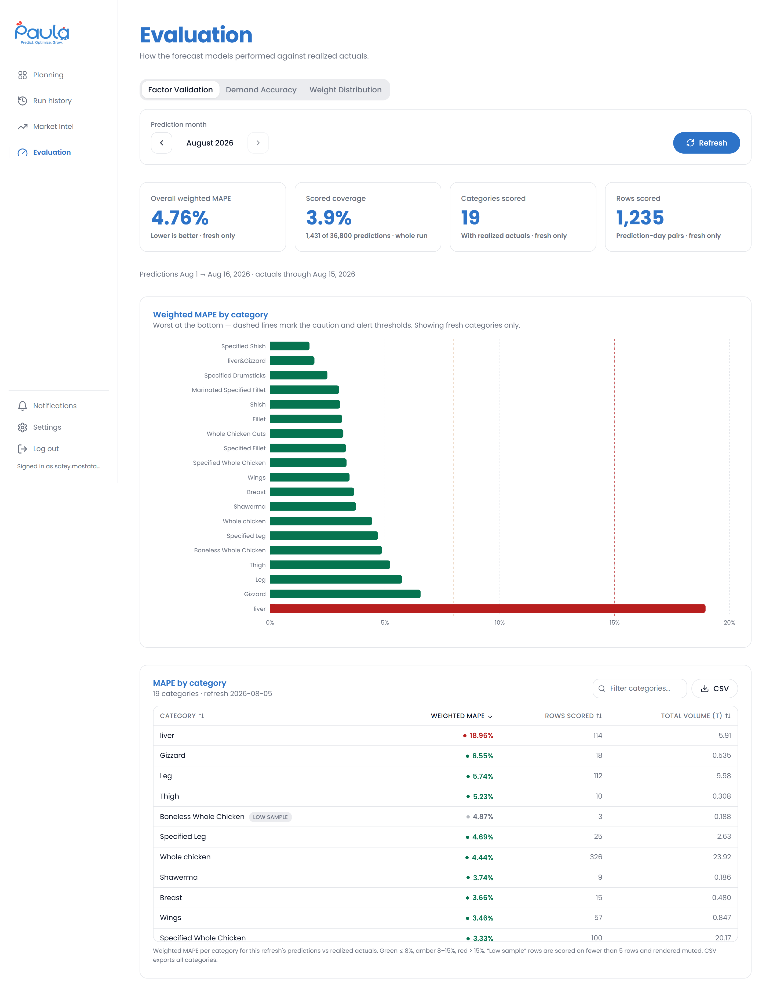
- Prediction month Step months with ◀ / ▶ (back to January 2025, forward to the current month). The current month scores partial actuals up to today.
- Accuracy KPIs Overall weighted MAPE (lower is better), scored coverage, categories scored, rows scored — fresh categories only, with the predicted window and actuals reach stated beneath.
- MAPE by category Horizontal bars, worst at the bottom. Green ≤ 8%, amber 8–15%, red above 15%, with dashed threshold lines.
- Category table + CSV Every scored category, sortable and searchable. A "Low sample" badge (fewer than 5 rows) mutes the value — noise, not a regression. CSV always exports all categories.
Demand Accuracy tab
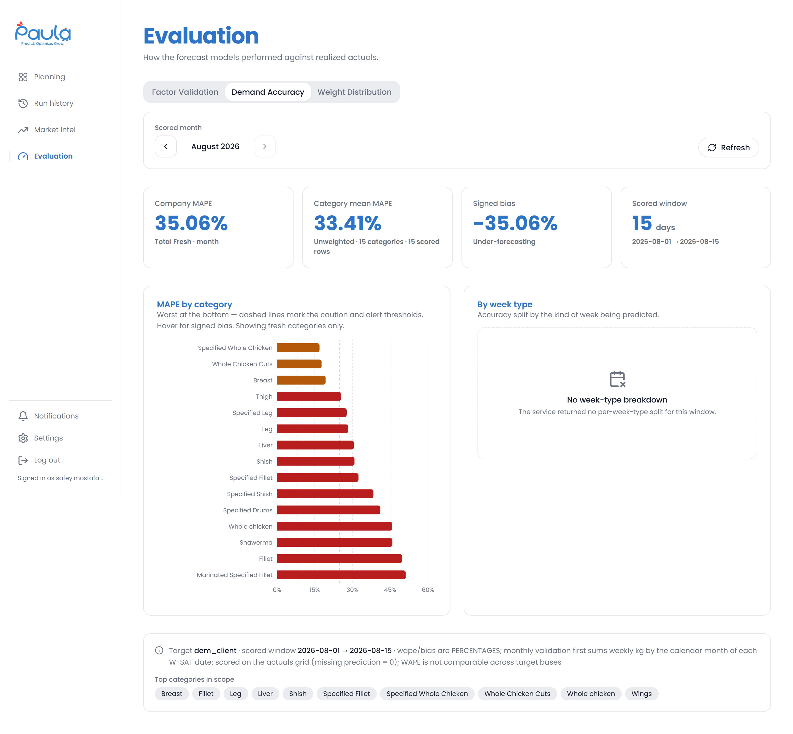
- Scored month The tab finds the latest month that can actually be scored on its own — stepping back automatically until the scoring service accepts one. Scoring covers whole Saturday-ending weeks.
- Accuracy & bias KPIs Company MAPE (the Total Fresh rollup), category mean MAPE, signed bias — over- or under-forecasting — and the scored window.
- MAPE by category Same shape as the factor chart, looser bands: amber from 8%, red only above 25%. Hover a bar for its signed bias and row count.
- Week-type split & scope Accuracy split by the kind of week being predicted, plus a scope footnote naming the target, window and top categories — so the numbers are interpretable.
Weight Distribution tab
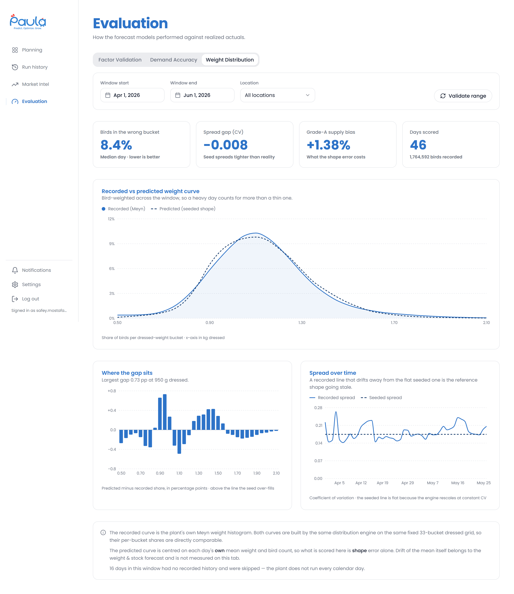
- Window & location Pick a window (up to 92 days; defaults to the last 60) and a location — All locations, Wahat, Regwa, or External. The screenshot scores 1 April – 1 June 2026, pooled across all locations.
- Validate range Loads the scoring for the chosen window. Long windows are slow — the service reads the plant's whole Meyn history day by day, so a two-month range can take up to half a minute, and the very first call of the day can time out while the service wakes. If it does, press Validate range again.
- Shape-error KPIs Birds in the wrong bucket — the median day's total gap between the two curves, lower is better. Spread gap (CV) — whether the seeded shape is wider (+) or tighter (−) than reality. Grade-A supply bias — what that shape error costs in Grade-A supply. Days scored, with the birds recorded behind it.
- Recorded vs predicted weight curve The plant's own Meyn histogram (solid) against the seeded shape the engine predicted (dashed), bird-weighted across the window so a heavy day counts for more than a thin one. The x-axis is dressed weight in kg; the y-axis is each bucket's share of birds.
- Where the gap sits The same comparison as a per-bucket difference, in percentage points. Bars above the line are buckets the seed over-fills; below the line, under-fills. The subtitle names the single worst bucket.
- Spread over time Each scored day's recorded CV against the seeded one. The seeded line is flat because the engine rescales at constant CV — so a recorded line drifting away from it is the reference shape going stale and due a reseed.
- Method footnote Always explains what is measured: both curves sit on the same 33-bucket dressed-weight grid, only shape error is scored, and it counts the days skipped for having no recorded history — the plant does not run every calendar day.
This tab scores shape error only — drift of the average weight itself belongs to the weight & stock forecast, as the on-screen method footnote says. A window where no day has a recorded Meyn histogram shows an empty state rather than inventing a score; try an earlier or wider window.
Settings
A read-only reference for the optimization engine's configuration — every parameter it runs with, grouped by namespace, and the active cutting recipes. Nothing here can change anything: editing, version history and rollback are a later phase. There is no API key to manage any more — access is built into the deployment.
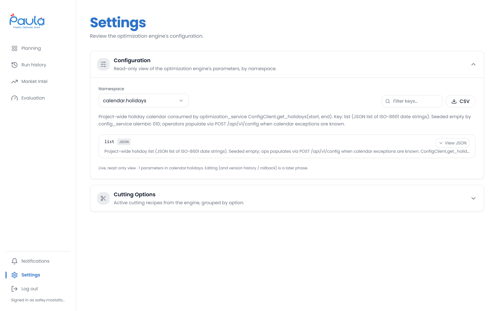
- Configuration The engine's parameters, one namespace at a time — each key with its type, current value, default, and allowed range. An amber "Modified" badge marks values changed from their default (hover it for the default and who last changed it).
- Filter & CSV Filter keys by name or description; CSV downloads the whole selected namespace (the filter never narrows the export).
- View JSON JSON-typed parameters expand into a readable Fields view (or Raw, with a copy button) instead of an inline value.
- Cutting Options The active cutting recipes, one card per option — cuts, yields (shown as % of live weight, matching the Yield column on run tables), weight ranges in grams, and allowed grades. Loads when you first expand the section.
What you see is cached in the browser for about 5 minutes — a value changed on the backend can take up to 5 minutes, or a page reload, to appear.
A typical day with Paula
A common morning routine takes 10–15 minutes.
- Sign in — open Paula and enter the operator credentials. You land on Planning.
- Configure the run — pick Production or Demand, set the period on the calendar, choose Model or Actual prices. On a Demand run, attach the demand workbook (or use the model forecast and tick the preview confirmation).
- Optional per-run tweaks — open Constraints to override a limit for this run only, or Categories to restrict what the run may produce. Both are discarded after the run.
- Press Run Optimization — you're taken to the run's own page. Runs take minutes; the floating pill follows you if you navigate away, and the bell records the result.
- Read the results tab by tab — Supply (what was harvested), Production (what was made, per category, with its economics), Allocation (output by weight band), What if (how the chosen plan compares to every alternative), Matrix (day × category), Per-day (the day ledger; drill into any day). On a Demand run, the Demand tab shows exactly what was served.
- Watch the alerts — a red "Period below fixed cost" banner, red-tinted breach days, or "Cap-limited" badges tell you where the plan is strained.
- Export and share — "Export full plan" (Excel) for the packing floor and freezer teams; "Audit trail" when someone asks why the optimizer chose what it chose.
- Sanity-check the market — open Market Intelligence for the predicted price factors, live-bird band, and the 4-week demand forecast.
- Periodically, check Evaluation — confirm the forecast models still deserve trust: factor MAPE, demand MAPE and bias, and the weight-curve fit.
Runs keep going if you close the page — reopen them from Run History or the notification bell. Loading can be slow on a cold start (up to ~30 seconds); a view that spins for a while and then recovers on its own is normal.
Glossary
- EGP
- Egyptian pound. Appears on Market Intelligence (prices) — run results deliberately show no money at all.
- Horizon
- The planning window an optimization run covers — a range of working days.
- Production mode
- Default run type — the engine maximises profit from available supply, with no demand orders.
- Demand mode
- Run type that plans against a demand set — an uploaded workbook, the model forecast, or API-supplied orders.
- Demand set
- The per-day, per-category orders a demand run serves. Saved with the run — the run page always shows the run's own set, never the live forecast.
- Light / Heavy bird
- The two flock weight classes. Their split per day shows on the run's Supply and Per-day tabs.
- Fresh
- Product sold in the production month, not frozen.
- Frozen
- Product moved to cold storage — made in one month, delivered across the next. Frozen orders are owed by the month, not by any single day.
- Strategy
- How a day's output splits across fresh and frozen: All Fresh, All Frozen, or Mixed.
- Temperature scope
- The Mix | Fresh | Frozen filter on the run page's Production, Allocation, What if and Matrix tabs. While narrowed, figures are not run totals — a ribbon says so.
- Dressed weight
- A bird's weight after processing ≈ live weight × 0.73 (the plant's standing loss factor). Weight bands and distributions are in dressed grams.
- Weight band
- A dressed-weight range (e.g. 1,200–1,300 g) that output is allocated into — the grain of the Allocation tab.
- Loss factor
- Per-farm monthly rate of executed rejects plus mortality over total harvested — shown on the Supply tab.
- Cutting option
- A cutting recipe the engine can apply (e.g. Chest Deboning, Whole Chicken), defining how a carcass splits into products. Recipes are listed in Settings.
- Packing
- Whole-bird packing as a producer, allocated per weight band. Packing-only categories can never be deselected from a run.
- Byproduct
- A category that falls out of the cut regardless (e.g. offal) — deselecting it changes nothing, and uploaded byproduct demand is ignored.
- Price factor
- A category or SKU's predicted selling price as a multiple of the live-bird price — 2.40 means 2.4× the live-bird price that day.
- Cost factor
- The cost side expressed the same way. Price factor minus cost factor is the margin per unit — the profit index.
- Profit index
- Price factor minus cost factor — dimensionless margin, comparable across categories.
- Contribution index
- The optimizer's ranking measure for a cutting option — how much a tonne through that option contributes. What-if rankings sort by it, not by output.
- What-if scenario
- A counterfactual: how every catalogue option would perform if the whole horizon (or one day) had run it — under Mixed, All Fresh, or All Frozen. The only actual tonnes on that tab are in "Chosen plan".
- Fixed cost (FC)
- The cost threshold the period must cover. The run page reports coverage as a percentage only — no EGP figure is shown.
- Viability
- A day's status against fixed cost on the Per-day tab; breached days tint red.
- Cap-limited
- A day or option clipped by a maximum constraint. A warning, not an error — exceeded soft caps are supported outcomes.
- Constraint
- A limit the optimizer must respect (birds, kg, or percentage; hard or soft; per day or per period). Durable constraints live in configuration; per-run overrides in the Planning form.
- Degraded
- A run recorded as completed whose result carries a caveat — shown amber in run lists; the "Completed" filter includes it.
- Live bird price
- The modelled farm-gate price per kg of live chicken that every price factor multiplies.
- Model coverage
- On Market Intelligence: the share of forecasts routed via the LightGBM model rather than a lookup fallback.
- MAPE
- Mean absolute percentage error — the Evaluation screen's headline accuracy measure. Lower is better.
- Bias
- The signed direction of forecast error — positive is over-forecasting, negative under-forecasting.
- CV
- Coefficient of variation — a unitless measure of how spread out the flock's weights are.
- Namespace
- A group of related engine parameters on the Settings page (e.g. capacity, calendar, costs).